Profil für Matrixdaten erstellen
View-Profile-MatData
Profil für Matrixdaten oder Daten einer virtuellen Matrix erstellen
Sie können Profildiagramme aus Matrixdaten oder aus Arbeitsblattdaten, die in einer virtuellen Matrix angeordnet sind, erstellen. Wenn Sie ein Profildiagramm erstellt haben, können Sie Querschnittsprofile Ihrer Zeichnung erzeugen, entlang der vertikalen Linien, der horizontalen Linien oder beliebig positionierten Linien:
- Aktivieren Sie die Matrix mit den Daten, für die ein Profil erstellt werden soll. Wenn Sie mit virtuellen Matrixdaten (Arbeitsblatt) arbeiten, wählten Sie einen Datenbereich aus.
- Wählen Sie Zeichnen: Profil: Konturprofil/Bildprofil. Wenn das aktive Fenster eine Matrix ist, wird ein Profildiagramm erstellt und der Dialog Bild-/Konturprofil wird geöffnet. Wenn das aktive Fenster ein Arbeitsblatt (virtuelle Matrix) ist und Sie Ihre Arbeitsblattdaten ausgewählt haben, wird der Dialog plotvm geöffnet, in dem Sie festlegen können, wie die Arbeitsblattdaten als eine virtuelle Matrix behandelt werden. Durch Klicken auf OK, wird ein Profildiagramm erstellt und der Dialog Bild-/Konturprofil wird geöffnet.
- 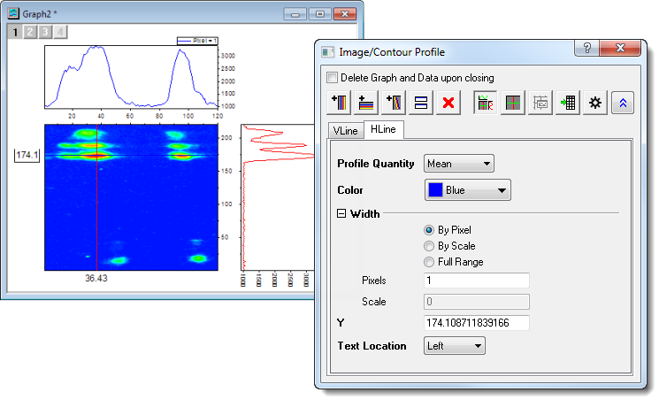
| Hinweis: Ihr Profildiagramm kann die Meldung "Entwurfsmodus Ein" anzeigen. Dies weist darauf hin, dass Ihre Daten selektiv gezeichnet wurden. Sie können die Einstellungen des Entwurfsmodus modifizieren oder deaktivieren. Siehe Entwurfsmodus, Punkte wenn nötig auslassen. |
Dialogbedienelemente für Bild-/Konturprofil
Der Dialog Bild-/Konturprofil wird geöffnet, wenn das Profildiagramm erstellt wird:
- Schließen Sie den Dialog, indem Sie auf die Schaltfläche
 klicken.
klicken.
- Öffnen Sie den Dialog, indem Sie auf die Schaltfläche in der oberen rechten Ecke der Seite des Profildiagramms klicken.
Symbolleistenschaltflächen
| 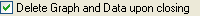 |
Legt fest, ob Profildiagramme und Daten gelöscht werden sollen, nachdem das Dialogfeld Bildprofil geschlossen wurde.
|
| 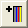 |
Fügt eine vertikale Profillinie hinzu. Vertikale Profillinien werden zum Diagrammlayer rechts vom Quelldiagramm hinzugefügt.
|
| 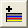 |
Fügt eine horizontale Profillinie hinzu. Horizontale Profillinien werden zum Diagrammlayer oberhalb vom Quelldiagramm hinzugefügt.
|
| 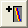 |
Fügt eine beliebige Profillinie hinzu. Beliebige Profillinien werden zum Diagrammlayer oberhalb und rechts vom Quelldiagramm hinzugefügt.
|
| |
Platziert eine verschiebbare, duplizierte Linie auf die Position des aktiven Profils.
|
| |
Löscht das aktive Profil. Wenn das Profil das einzige im Layer ist, wird der Layer gleichzeitig verborgen (siehe unten).
|
| 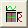 |
Die Profildiagramme und das Quelldiagramm werden in einem zusammengefassten Diagramm angeordnet. Layer ohne Daten werden in diesem Modus nicht gezeigt.
|
| 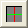 |
Ein Schalter, der die Profildiagramme in separate Diagrammfenster extrahiert oder Zeichnungen in einem zusammengefassten Fenster neu kombiniert.
|
 |
Diese Schaltfläche wird nur aktiviert, wenn die Profildiagramme in getrennte Grafikfenster gezeichnet werden. Durch Klicken auf diese Schaltfläche wird das Profildiagramm, das der aktiven Registerkarte entspricht, aktiviert.
|
| 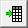 |
Gehen Sie zu dem Profildatensatz der aktiven Registerkarte.
|
| |
Diese Schaltfläche öffnet den Dialog Standardeinstellungen .
- 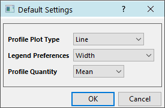
- Typ des Profildiagramms: Ändern Sie den Diagrammtyp für vertikale, horizontale und beliebige Profile. Optionen sind Linie (Standard), Punkt und Linie+Symbol.
- Legendeneinstellungen: Werden auf aktuelle und zukünftige hinzugefügte Profildiagramme angewendet. Wählen Sie die Breite des Profildiagramms, den Positionswert und den Liniennamen des Profils, die in der Legende angezeigt werden sollen. Der Profillinienname setzt das Benutzerdefinierte Format der Legende auf @LC.
- Profileigenschaften: Wählen Sie die Standardstatistik, die für die Profileigenschaften verwendet wird (siehe unten).
|
| |
Die Bedienelemente VLinie, HLinie und ALinie werden gezeigt (siehe nächsten Abschnitt). |
Bedienelemente der Registerkarte
Die Bedienelemente der Registerkarte unterscheiden sich leicht für Matrixdaten und Daten der virtuellen Matrix (Arbeitsblatt). Differenzen werden in der Tabelle festgehalten.
Kontextmenü
Klicken Sie mit der rechten Maustaste auf den Titel der Registerkarte, um diese umzubenennen, speichern Sie die detaillierten Linieneinstellungen für die zukünftige Verwendung und laden Sie die vorgespeicherten Linieneinstellungen für verschiedene Diagrammfenster.
- 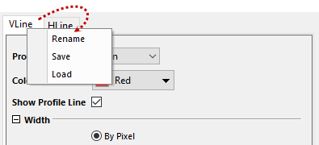
Detaillierte Bedienelemente
Passen Sie die aktuelle Profillinie benutzerdefiniert an.
| Profileigenschaften |
Wählen Sie eine zu zeichnende Eigenschaft. Wenn Sie entlang eines einzelnen Pixels zeichnen (siehe unten Einstellung Breite), haben diese Werte keine Bedeutung (d. h. Min = Max = Mittelwert etc). Wenn Sie ein Profil für einen Wertebereich erstellen, bestimmt diese Einstellungen, welche Eigenschaft innerhalb des Profilbereichs gezeichnet wird. Sie erstellen beispielsweise ein Profil entlang der VLinie und haben die Breite auf Nach Skalierung und die Skalierung auf 20 gesetzt. Die zwei vertikalen Linien werden hinzugefügt, zentriert bei X und positioniert mit einem Abstand von 20 Skalierungseinheiten. Die Profileigenschaften werden dann bei einem gewählten X-Wert über die 20 Skalierungseinheiten gemessen (zwischen den zwei vertikalen Linien).
- Min.
- Max.
- Mittelwert
- Median
- Summe
- StAbw
|
| Profildaten ausgeben |
Diese Option ist nur verfügbar, wenn die Quelldaten aus einer virtuellen Matrix stammen.
- Wie Quelle
- Die Profildaten werden bei den gleichen XY-Daten wie die Quelldaten ausgegeben.
- Einheitlich Linear
- Die Profildaten werden bei gleichverteilten XY-Werten gemäß dem XY-Bereich der Quelldaten ausgegeben.
|
| Farbe |
Legt die Farbe der Profillinien fest.
|
| Profillinie zeigen |
Legen Sie fest, ob die Profillinie gezeigt werden soll.
|
| Breite |
Legen Sie die Breite des Beispielprofils fest.
- Nach Pixel
- Legen Sie die Breite des Profils in Pixel fest. Verwenden Sie das Bearbeitungsfeld Pixel, um die Anzahl der Pixel festzulegen.
- Nach Skalierung
- Legen Sie die Breite des Profils Nach Skalierungswerten fest. Verwenden Sie das Bearbeitungsfeld Skalierung, um die Breite in Skalierungseinheiten festzulegen.
- Ganzer Bereich
- Der gesamte X- bzw. Y-Bereich wird als die Breite verwendet. Diese Option ist nur verfügbar für vertikale oder horizontale Linien.
- Pixel
- Verwenden Sie das Bearbeitungsfeld, um die Breite des Profils festzulegen, wenn Nach Pixel ausgewählt ist. Einheiten entsprechen den Pixeln in der Datenmatrix. Beachten Sie, dass die Breite des beliebigen Profils mit einem Pixel festgelegt ist.
- Skalieren
- Verwenden Sie das Bearbeitungsfeld, um die Breite des Profils in Achsenskalierungseinheiten festzulegen, wenn Nach Skalierung ausgewählt ist. Beachten Sie, dass die Breite der beliebigen Profillinie nicht sichtbar ist (es wird nur eine einzelne Linie angezeigt), aber der Parameter Skalierung in dem berechneten Profil berücksichtigt wird. Die Breite eines beliebigen Profils wird als
") 1/2 berechnet, wobei 1/2 berechnet, wobei  und und  Projektionen der seitlichen Breite entlang der X- und Y-Achsen sind in Bezug auf die bestehenden Achsenskalierungen. Projektionen der seitlichen Breite entlang der X- und Y-Achsen sind in Bezug auf die bestehenden Achsenskalierungen.
|
| X |
Legen Sie die Position des Profils fest. Diese Option ist nur verfügbar, wenn das Profil ein vertikales Profil ist und Gesamter Bereich nicht ausgewählt ist.
|
| Y |
Legen Sie die Position des Profils fest. Diese Option ist nur verfügbar, wenn das Profil ein horizontales Profil ist und Gesamter Bereich nicht ausgewählt ist.
|
| X1, Y1, X2, Y2 |
Diese Einstellungen sind nur verfügbar, wenn das Profil beliebig ist. Sie bestimmen die Position und Länge des beliebigen Profils. X1 und Y1 bestimmen die X- und Y-Werte der Position eines Endes und X2 und Y2 bestimmen den Ort des anderen Endes.
|
| Textposition |
Es wird eine Textbeschriftung auf den Achsen angezeigt, um die Position des Profils zu zeigen. Mit Hilfe der Auswahlliste können Sie die Position dieser Textbeschriftung festlegen. Die Optionen sind:
- Oben
- Auf der oberen Achse (Diese Option gilt für vertikale Profile.)
- Unten
- Auf der unteren Achse (Diese Option gilt für vertikale Profile.)
- Links
- Auf der linken Achse (Diese Option gilt für horizontale Profile.)
- Rechts
- Auf der rechten Achse (Diese Option gilt für horizontale Profile.)
- Kein
- Wird auf vertikale und/oder horizontale Profile angewendet. Diese Option kann besonders nützlich sein, wenn Sie das Diagramm ohne sichtbare Beschriftungen exportieren möchten.
|
Profile löschen und Layer verbergen
Wenn Sie alle Profillinien mit Hilfe der Schaltfläche Aktives Profil löschen auf dem Bild-/Konturprofil aus dem Layer löschen, wird das Layer verborgen (aber nicht gelöscht).
- 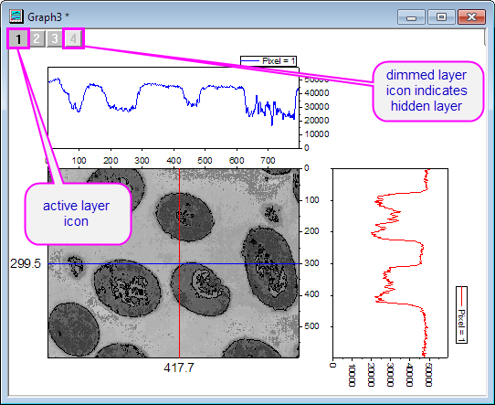
| Hinweis: Sie können den Layer nur verbergen, indem Sie die Profile mit der Schaltfläche Aktives Profil löschen löschen. Wenn Sie Linien auswählen und die Taste Löschen drücken, wird nur die Linie gelöscht. Es bleibt ein leerer Diagrammlayer. |
Auf Profildaten zugreifen
- Jedes Profildiagramm hat seine eigene Arbeitsmappe mit einem Arbeitsblatt für jedes Profil (horizontal, vertikal und beliebig), das mindestens eine Profillinie enthält.
- Linien, die zu einem Profil hinzugefügt wurden, fügen Spalten in das entsprechende Blatt ein.
- Arbeitsblattblattspalten enthalten die XY-Werte der Profildaten für jede Profillinie separat.
- Spaltenwerte werden dynamisch aktualisiert, wenn Sie die Einstellungen für Breite und X/Y ändern.
- Die Arbeitsmappen der Profildaten werden standardmäßig verborgen, können aber angezeigt werden, indem Sie auf Zu Profildaten gehen auf der Dialogsymbolleiste Bild-/Konturprofile klicken. Alternativ können Sie die verborgene Arbeitsmappe im Projekt Explorer finden und doppelt auf das abgeblendete Fenstersymbol (mit dem Namen ProfileDataN) klicken.
- 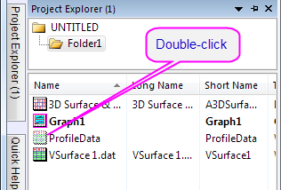
- Profildatenblätter zeigen per Standard die Spaltenbeschriftungszeilenrow Langname, Kommentare, Breite, X- oder Y-Wert sowie Eigenschaft oder Linie an. Die Beschriftungszeilen Kommentare, Breite, X- oder Y-Wert sowie Eigenschaft oder Linie zeigen Schlüsselparameter an, die verwendet werden, um die Profildaten in jeder Spalte zu erzeugen. Die Beschriftungszeile Eigenschaft wird in horizontalen und vertikalen Profildaten angezeigt, während Linie die Linienfunktion der beliebigen Profillinie zeigt.
- 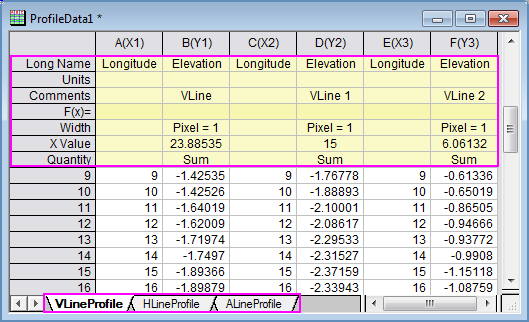